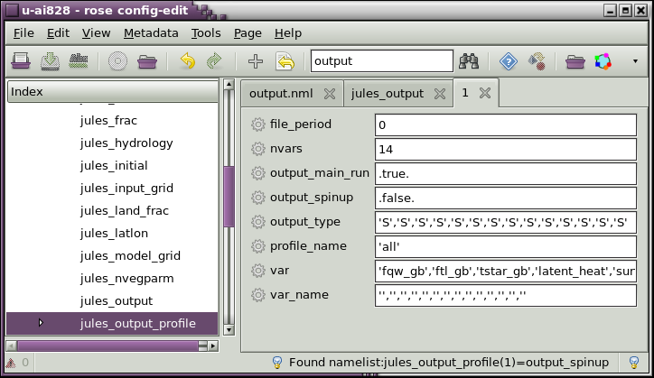
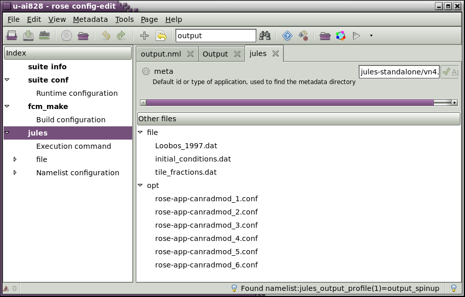
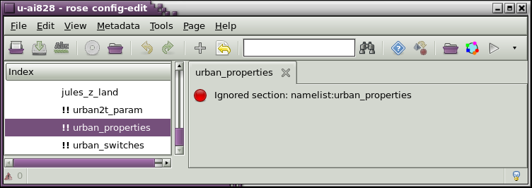
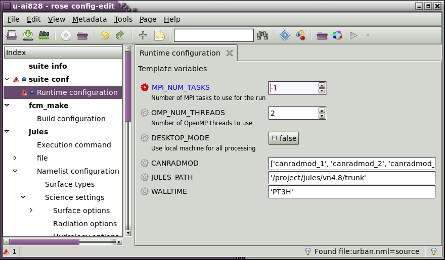
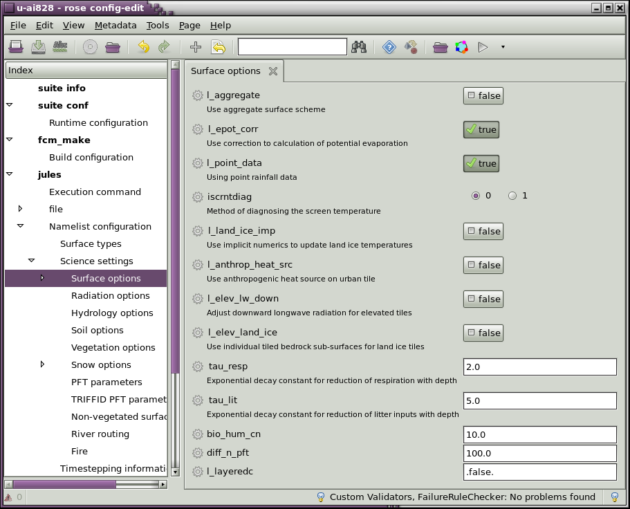
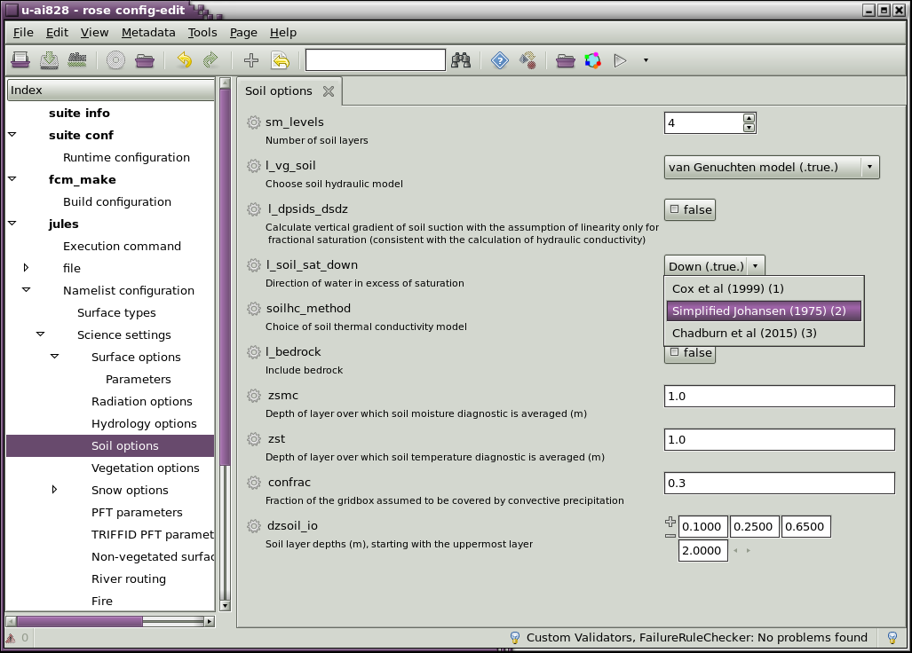
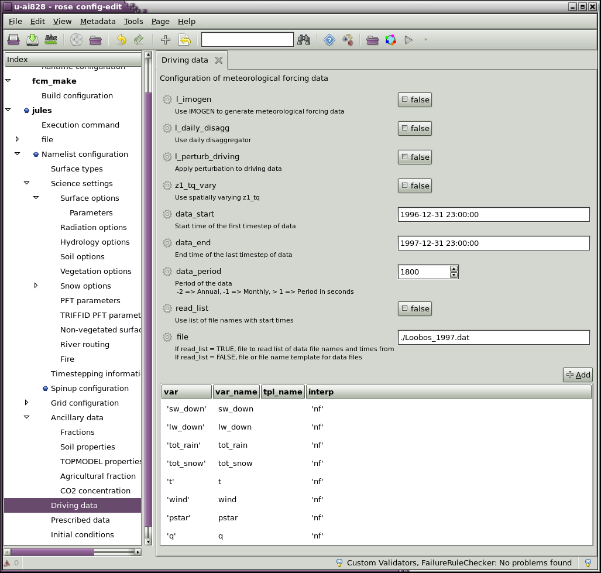
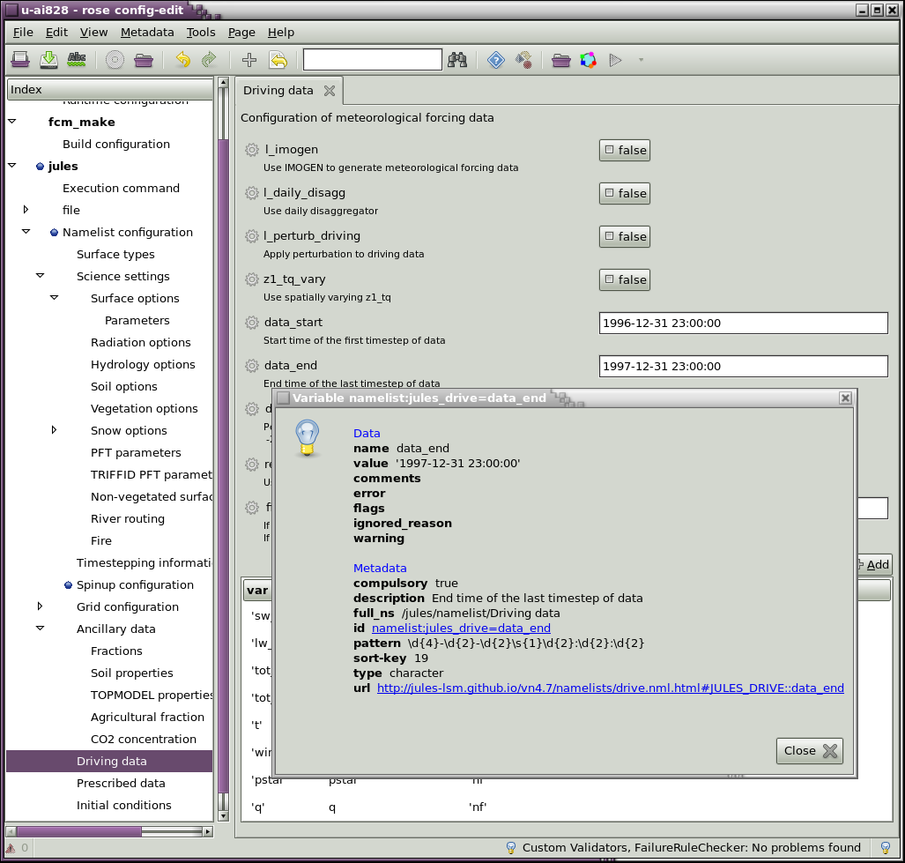
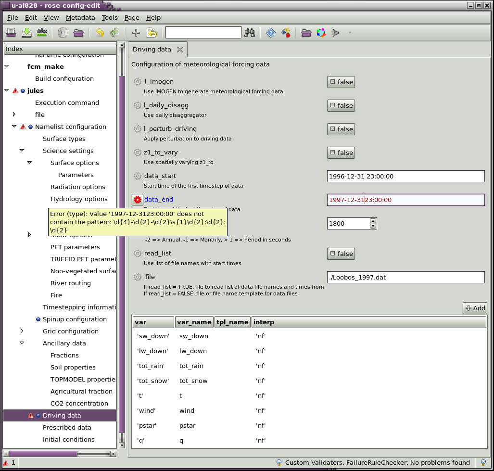
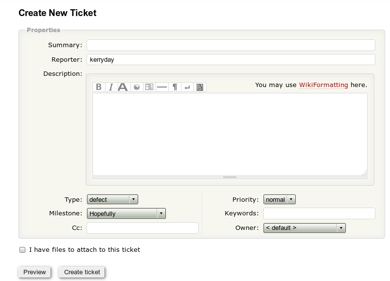

Intermediate JULES-Rose Tutorial
This tutorial and practicals aim to cover the following topics:
- Basics of JULES rose stem
- Basics of Coding -UMDP3, Reviewing
- Running a basic JULES-Rose suite
- Further JULES Rose Edit
- Further JULES-Rose suites - duration, domain
- Further JULES rose stem - namelists, modules
- More on Tickets - Populating
- HoT branches and merging branch into it
- UM-JULES
- Metadata
- Upgrade macros
It is expected that you have:
- Completed the Rose User Guide.
- Completed the Beginner Tutorial.
OR have:
- Experience running rose stem and JULES-Rose suites.
- Made basic changes to JULES-Rose suites.
- Experience with basic FCM commands.
Basics of JULES rose stem
- What are the three ways for looking at the job stderr?
- Where\What is the evidence for the Ticket Summary?
- What does KGO mean?
- When is it acceptable to have a failure in the KGO?
- What are the three ways for looking at the job stderr? In the gcylc GUI by right clicking on the task, select View, select job stderr. In Rose Bush. In the cylc-run/<SUITE_NAME>/log/job/1/<TASK_NAME>/NN directory.
- Where\What is the evidence for the Ticket Summary? The cylc-run/<SUITE_NAME>/trac.log file
- What does KGO mean? Known Good Output
- When is it acceptable to have a failure in the KGO? For example, when a bug has been identified and fixed, when the code has been improved. These changes have to be justified usually with plots and approved by the code owner and Sci/tech Reviewer.
- Stage one is the Sci/Tech Review - code must be approved by the appropriate module owner(s) and reviewed Scientifically/Technically by a specialist in the area whom has not been involved in the development of the code.
- Stage two is the Code Review - the code must meet the coding standards and be as efficient as possible. At present the code reviewer is either Kerry Smout-Day (JULES System Manager) or a member of the UM Systems Team.
- At command line
- Via Rose Edit
- Via rosie go
- How can you reopen the gcylc GUI if accidently closed?
- What does the gcylc GUI going blank usually mean?
- What does a red square mean?
- What does a grey square mean?
- What does a green square mean?
- Where is the output of a task usually located?
- How can you reopen the gcylc GUI if accidently closed? Two ways,
- What does the gcylc GUI going blank usually mean? If there is "Stopped wth succeeded" in the bottom left then it is finished
- What does a red square mean? The task has failed
- What does a grey square mean? The task has succeeded
- What does a green square mean? The task is running
- Where is the output of a task usually located? In the cylc-run/<SUITE_NAME>/work/1/<TASK_NAME>/output/ directory
- Change can_rad_mod from 4 to 1.
- Change the location of the output from './output' to './tester/output'
What is the full path location that the new output directory would located?
- Change
JULES_OMPto omp. - Changing the namelist
jules_latlonand uses a single site. - Changing the namelist
jules_model_gridand uses a gridbox domain. - The first to run for a different site, Latitude 53.32 and Longitude 0.0.
- The second to run over the gridbox lat 53.5 55.5, long -1.0 1.0.
- The second again but to run globally (use u-ah270 for help), note running this will take a very long time so you may want to use u-ai511 for testing.
- rose-meta/jules-standalone/HEAD/rose-meta.conf
- rose-meta/jules-standalone/versions.py
- src/control/shared/???_mod.F90
- src/science/<scheme>/<routine>.F90
- Create a branch the JULES code from the trunk at vn4.6, include tutorial in its name
- Checkout the branch
- Add the following namelist to the rose-meta.conf
[namelist:jules_surface=bio_hum_CN] ns=namelist/Science settings/Surface options/Parameters description=Bio and Hum Soil Carbon pools CN ratio url=http://jules-lsm.github.io/vn4.6/namelists/jules_surface.nml.html#JULES_SURFACE::bio_hum_cn type=real range=0.01: sort-key=m
- Edit the versions.py file to include your metadata and the
original template, use
vn4.6_t000andself.add_setting(config, ["namelist:jules_surface", "bio_hum_cn"], "10.0")
- To src/control/shared/jules_surface_mod.F90
add (~ln 275):
! Parameters for soil respiration. bio_hum_CN = 10.0 ! Soil Bio and Hum CN ratio parameter
add (~ln 290):! Parameters bio_hum_CN
add (~ln 465)WRITE(lineBuffer, *) ' bio_hum_CN = ', bio_hum_CN CALL jules_print('jules_surface', lineBuffer)(~ln 505) increase the number to 12INTEGER, PARAMETER :: n_real = 11 + 4
add (~ln 530, 575, 610)REAL :: bio_hum_CN my_nml % bio_hum_cn = bio_hum_cn bio_hum_CN = my_nml % bio_hum_CN
- rc/initialisation/standalone/initial_conditions/init_ic.inc
add
bio_hum_cnto the correct USE, addns_pool_gb, cs_pool_gbto the correct USE add (~ln 470)!------------------------------------------------------------------------------- ! Initialise soil bio and hum pools from soil carbon !------------------------------------------------------------------------------- IF (l_triffid ) THEN ns_pool_gb(:,3) = cs_pool_gb(:,3) / bio_hum_cn ns_pool_gb(:,4) = cs_pool_gb(:,4) / bio_hum_cn ENDIF - src/science/vegetation/soilcarb_jls.F90
add
bio_hum_cnto the USE including the module remove soil_cn = 10.0 update (~ln 120), soil_cn wih bio_hum_cncn(l,3) = bio_hum_cn ! C:N ratio of BIO - Fixed cn(l,4) = bio_hum_cn ! C:N ratio of HUM - Fixed
add (~ln 125)! N pool BIO+HUM are diagnostic from equivalent cSoil pool ns_pool_gb(l,3) = cs(l,3) / bio_hum_cn ns_pool_gb(l,4) = cs(l,4) / bio_hum_cn
update (~ln 220), soil_cn wih bio_hum_cnIF (ns_pool_gb(l,3) < cs_min / bio_hum_cn) THEN neg_n(l) = neg_n(l) + ns_pool_gb(l,3) - cs_min / bio_hum_cn END IF IF (ns_pool_gb(l,4) < cs_min / bio_hum_cn) THEN neg_n(l) = neg_n(l) + ns_pool_gb(l,4) - cs_min / bio_hum_cnupdate (~ln 230), soil_cn wih bio_hum_cnns_pool_gb(l,3) = MAX(ns_pool_gb(l,3),cs_min / bio_hum_cn) ns_pool_gb(l,4) = MAX(ns_pool_gb(l,4),cs_min / bio_hum_cn)
- To check that there is no coding impact on the UM from the JULES code change when use in in the coupled UM-JULES model.
- To prove that the JULES code change does not change KGO when run as the coupled UM-JULES model.
- When the JULES change also requires a UM change.
- Create a JULES ticket if it is not already created.
- Commit your JULES branch changes to the repository.
- Tested your JULES code changes and check the rose stem tests all pass.
- Where do you find the evidence for the JULES rose stem tests for your branch?
- Where does the evidence need to be copied to?
- Checkout the UM trunk at the revision that your JULES change is for.
- Run the rose stem test.
- Where do you find the evidence for the UM rose stem tests for the JULES branch?
- Where does the evidence need to be copied to?
- See Tickets Beginner and Tickets Intermediate.
- fcm st # check that all files are expected to have changes have and that any new #are added and any removed are deleted. fcm ci # add a commit comment, save and close. y #to commit.
- In the directory of the branch. rose stem --group=all --new
- ~cylc-run/<JULES_BRANCH_NAME>/trac.log
- JULES Ticket, Ticket Summary
- cd mkdir -p um/ cd um fcm co fcm:um.x_tr@10.5 # or if no fcm keywords set up fcm co https://metoffice.code.gov.uk/svn/um/main/trunk@vn10.5 # for example if the change was a JULES vn4.7 branch cd trunk
- rose stem --group=jules --new --name=umtr_jls<JULES_ticket_no> --sourece=. --source=/full/path/to/jules/branch/to/be/tested
- ~cylc-run/umtr_jls<JULES_ticket_no>/trac.log
- JULES Ticket, Ticket Summary
- Create a JULES ticket if it is not already created.
- Commit your JULES branch changes to the repository.
- Tested your JULES code changes and check the rose stem tests all pass.
- Provide the evidence for you JULES branch rose stem tests in the JULES the Ticket Summary.
- Create a UM ticket and reference it in the JULES ticket, reference the JULES ticket in the UM ticket.
- Follow the UM working practices
- Create a UM branch.
- Make changes.
- Run the rose stem tests on the UM-JULES coupled branches.
- Where do you find the evidence for the UM-JULES rose stem tests for the UM-JULES coupled branch?
- Where does the evidence need to be copied to?
- See Tickets Beginner and Tickets Intermediate.
- fcm st # check that all files are expected to have changes have and that any new #are added and any removed are deleted. fcm ci # add a commit comment, save and close. y #to commit.
- In the directory of the branch. rose stem --group=all --new
- Copy the ~cylc-run/<JULES_BRANCH_NAME>/trac.log to the JULES Ticket, Ticket Summary
- See answer 1 but it is to be applied to the UM trac wiki pages using the UM working practices.
- As it says
- cd mkdir -p um/ cd um fcm bc <UM_BRANCH_NAME> fcm:um.x_tr@10.5 # or if no fcm keywords set up fcm bc <UM_BRANCH_NAME> https://metoffice.code.gov.uk/svn/um/main/trunk@vn10.5 # for example if the change was a JULES vn4.7 branch cd <UM_BRANCH_NAME>
- Make your changes and commit them to the repository as you would for JULES.
- rose stem --group=jules --new --sourece=. --source=/full/path/to/jules/branch/to/be/tested
- ~cylc-run/<UM_BRANCH_NAME>/trac.log
- UM Ticket, Ticket Summary and the JULES Ticket, Ticket Summary
- benchmark/meta/rose-meta.conf
- rose-meta/jules-fcm-make/*/rose-meta.conf
- rose-meta/jules-standalone/*/rose-meta.conf
- rose-stem/meta/rose-meta.conf
- meta/rose-meta.conf
What is JULES rose stem?
This is the test battery/suite of regression tests that code development changesets must be tested on.
JULES needs to pass all of the tests for code to accepted on the trunk.
Use the command rose stem --group-all to test all.
Note for quick preliminary testing use --group=loobos.
Running rose stem
The following is an example/reminder of how to run rose stem. Use it to help with the practicals.
# Checkout the code to run rose stem test for mkdir -p ~/jules/vn4p7 cd ~/jules/vn4p7 fcm co fcm:jules.x_tr@vn4.7 cd ~/jules/vn4p7/trunk rose stem --group=all --new --name=my_vn4p7tr_test
Questions
Basics of Coding -UMDP3, Reviewing
Why are their coding standards and reviewing?
Coding standards provide quailty assurance and help provide a consistient interface for development.
Using coding standards and following the working practices and the UMDP3 software standards aims to provide high quailty code.
It is known that not all of the current JULES code meets the standards and it is being constantly improved/developed to achieve this goal.
No new code is allowed on the trunk unless it meets the coding standards.
Reviewing is a very important process, not only must code meet the coding standards and pass the regression testing (rose stem) it must also go through a two stage review process.
Basics of JULES rose suite
How are JULES-Rose suites run?
JULES-Rose suite can be run in two ways:
# first checkout the suite if there is not already have a local copy rosie checkout <SUITE_ID> # change to the directory of the local copy cd ~roses/<SUITE_ID> rose suite-run --new #--name=<DIFFERENT_NAME_IF_REQUIRED>
# first checkout the suite if there is not already have a local copy rosie checkout <SUITE_ID> # change to the directory of the local copy cd ~roses/<SUITE_ID> # open rose edit for the suite rose edit # now press the play button to run the suite
rosie go # select the suite to run and double click # this opens rose edit # now press the play button to run the suite
cylc gscanthen double click on the name of the suite to open the gcylc GUI for, orcylc sgc --name=<SUITE_NAME>
Who creates JULES-Rose suites?
There are some example suites that can be found on the JULES MOSRS pages
Some have been developed for the JULES-Rose tutorials:
Anyone can create JULES-Rose suites, but it is often best to start from a suite that is similar to the one that is desired for a given experiment.
Use ideas from others, it will save time.
Practicals
Practical 1 will cover:
Make a change in Rose Edit and save it.
Search for an item in a namelist.
Make changes and undo the last one, save and commit changes.
Open the suite.rc to make changes and Other files.
View Ignored Variables and Latent Pages.
Rose Bush via Rose Edit.
Metadata and errors.
A greater understanding and familarity of Rose Edit will provide a section of techniques for making changes to JULES-Rose suites allowing the user to choose their preferred method.
Make a change in Rose Edit and save it
Open Rose Edit for the suite u-ai828
# checkout the suite either using rosie go or command line
rosie go
# search for u-ai828
# double click on it to check it out, this checks it out locally and opens Rose Edit
# at command line
rosie checkout u-ai828
cd ~/roses/u-ai828
rose edit
Change the WALLTIME in the suite conf -> Runtime configuration from 180 to 160.
The WALLTIME should have changed colour from black
to blue.
There should be blue dots next to suite conf and Runtime
configuration.
To save the change click on a different index, for example
fcm_make, then click Check and save the third
icon from the left of the Rose Edit GUI, which is "Abc"
underlined in a green wavy line.
Confirmation that the change has been made can be seen by the blue dots disappearing and the writing changing back to black.
Search for an item in a namelist
In the icon panel of the Rose Edit GUI there is a blank box and an icon on binoculars next to it. This is the search box and button.
Search output, press the search button until
all of the files with output are found.

Make changes and undo the last one, save and commit changes
Make some other changes:
Save the changes.
How do you know that the changes are saved?
Search "can_rad_mod"
It is located in jules -> namelist -> jules_vegetation the second box down.
Search "output"
It is located in jules -> namelist -> jules_output the second box down, output_dir.
Search "JULES_OMP"
It is located in fcm -> env the third box down.
The blue dots and text go.
Now undo the last change as we are not running with omp.
This is done my using the Undo button.
In the Rose Edit GUI this is the 6th icon button from the left
and is a yellow backward curving arrow.
This and the green backward curving arrow directly to the right can be used to undo and redo changes in the order that they were made.
Save the changes so there are only the three changes in total, WALLCLOCK, can_rad_mod and output_dir.
Select the Tools tab, select Launch Terminal.
This opens a terminal with at the suite directory path.
Now check for local changes fcm st.
M app/fcm_make/rose-app.conf M app/jules/rose-app.conf M rose-suite.conf
To commit them to the repository fcm ci add a
comment, save, close and except.
To revert all the changes before they are committed, close the
Rose Edit GUI, fcm revert * -R.
Remember you can only commit changes if you are the suite owner as defined in the rose-suite.info file.
Open the suite.rc to make changes and Other files
Open Rose Edit again.
Click on suite conf, the right hand panel will
display Other files, double click on the
file suite.rc.
Other files -
There are other files, for example the Loobos data files are included in this suite.
Find them located via clicking on jules the
right hand panel displays meta and
Other files at the bottom of it.

View Ignored Variables/Pages and Latent Pages
Some variable and pages are hidden from users as the default.
These are known as Ignored Variable and Pages.
We may want to see them in the Rose Edit GUI, they can be
made viewable by: selecting the View tab and
then selecting View Ignored Variables,
View Ignored Pages and
View Latent Pages.
With View Ignored Variables selected click on
the fcm_make -> env section, it should now display three
greyed out variables, which have the !! in
front of them.
This is how you would see then in a text editor, they are
not used which is why they were not displayed.
With View Ignored Pages selected click on
the jules -> namelist, it should now display additional
namelists, which have the !! in
front of them.
There should be nine.
Click on one it should display:

The Latent Pages are not often required, only
the poll one may be useful at a later date.
They show the possible other know of pages that could be
populated.
Rose Bush via Rose Edit
If the suite has been run, which it was via Rose Edit in
the Beginner Tutorial, or do it now.
It takes about 10 minutes, use the Play icon
button.
Then Rose Bush, the web brower output page can be invoked.
Either -
Select the Tools tab and then select
View Output
or
Select the View Output folder icon, the
13th from the left.
Try one of the techniques.
Metadata and errors
If a change is made which does not comply with the metadata Rose Edit provides warnings.
Note that selecting an invalid value for MPI_NUM_TASKS
provides a warning triangle and a red cog next to the
offending variable, see the image below.

The important thing that we have to remember here is that the Rose Edit can only be as good as the metadata that it is provided with. Therefore if we can improve the metadate for a suite then we should.
This suite works correctly at runtime, but does not use the
metadata in Rose Edit as it is not correctly specified for
Rose Edit.
To do this point it to the copy of the trunk, for example:
/project/jules/vn4.7/trunk/ to the front of
both of the paths for fcm_make and jules metadata.
Save and check the changes.
Now the metadata is enabled we can see all of the information on the variables.


An example of different formats for presenting options with metadata.

Select a variable and then right click, Info.

From the image above you can see thatt he date has to have the correct format.
Changing it to be incorrectly formatted provides a hover-over error, as been in the image below.

Practical 2 will cover:
Changing the JULES-Rose suite to run for a different duration.
Changing the JULES-Rose suite to run for a different domain.
Changing the JULES-Rose suite to run for a different durations
For this section please use the JULES-Rose suite u-aj012
For the VM use u-aj013 and for JASMIN use u-aj014.
The suite uses GSWP2 data for one month.
Different time period - one off method
This is a simple change to the jules app, changing the
app/jules/rose-app.conf file:
[namelist:jules_time] main_run_end='1982-07-07 03:00:00' main_run_start='1982-07-01 03:00:00'
Different time period - flexible method
However, if this is something that you wish to change regulary
then it would be best to add variables to the rose-suite.conf
file and pass them to the jules app as described below:
In the rose-suite.conf file:
MAIN_RUN_END='1982-07-07 03:00:00' MAIN_RUN_START='1982-07-01 03:00:00'
In the suite.rc file:
[[jules]]
[[[environment]]]
...
main_run_end = {{ MAIN_RUN_END }}
main_run_start = {{ MAIN_RUN_START }}
In the app/jules/rose-app.conf:
[env]
main_run_end=${main_run_end}
main_run_start=${main_run_start}
[namelist:jules_time]
main_run_end=${main_run_end}
main_run_start=${main_run_start}
As we are using a different time which is within the driving data date range we do not have to change the namelist:jules_drive.
If we are to change the dates to a different month or year then we must change:
[namelist:jules_drive] data_end='1982-07-31 23:59:59' data_start='1982-07-01 03:00:00' file='$GSWP2_INSTALL_DIR/drive/%vv/%vv198207.nc'This may include sourcing more or different data, for example:
[namelist:jules_drive] data_end='1986-03-31 23:59:59' data_start='1986-03-01 03:00:00' file='$GSWP2_INSTALL_DIR/drive/%vv/%vv198603.nc'OR
[namelist:jules_drive] data_end='1996-01-01 03:00:00' data_start='1982-07-01 03:00:00' file='drive_file.txt'
To add flexibility to the suite use the second option for the drive data as we have access to all of the files.
Yearly or Monthly
We are going to update our suite to run JULES for a year or a month at a time. This is because not all computers allow for tasks (jobs) to run for greater than a three hour wallclock limit. Therefore some model runs, for example global data over 100's, may need to be split up into yearly/monthly JULES tasks so the computers will allow the model to not timeout.
We are going to make changes very similar to the canradmod changes in the Beginner course Practical 6 where we supplied a list of different canradmod settings to run jules for different optional configurations.
This suite is slightly different in it design as the first time that JULES is run it will use driving data and from then onwards it will use the previous years data as its driving data.
This is first example is an example of yearly, but as it takes a while we not run it. The second example is monthly and we will impliment monthly and run it.
Yearly Example only
Changes to the rose-suite.conf file:
YEARS=["2011","2012","2013","2014","2015"] WALLTIME=4320
Changes to the suite.rc file:
graph = """
fcm_make =>\
{% for year in YEARS %}
jules_{{year}} =>\
{% endfor %}
housekeep
"""
{% for year in YEARS %}
[[jules_{{year}}]]
inherit = SPICE
{% if year == YEARS[0] %}
script = "mkdir -p output ; rose task-run --app-key=jules --path= --path=share/fcm_make/build/bin"
{% else %}
script = "mkdir -p output ; rose task-run --app-key=jules -O dump --path= --path=share/fcm_make/build/bin"
#Note - upper o not zero
{% endif %}
env-script = year_next=$(({{year}}+1))
[[[environment]]]
...
... year={{year}}
year_next=${year_next}
{% endfor %}
[[housekeep]]
scrpit = echo "Success!"
Changes to the app/jules/ files and directory:
Add an opt/ directory.
Add a file rose-app-dump.conf to the opt/ directory:
[namelist:jules_initial]
dump_file=.true.
file='${CYLC_TASK_WORK_DIR}/output/gl6_notop_gswp2.dump.${year}0101.10800nc'
Changes to the app/jules/rose-app.conf file:
[env]
year=${year}
year_next=${year_next}
[namelist:jules_time]
main_run_end='${year_next}-01-01 01:00:00'
main_run_start='${year}-01-01 01:00:00'
[namelist:jules_drive]
data_end='${year_next}-01-31 23:59:59'
data_start='${year}-01-01 03:00:00'
file='drive_file.txt
These are all of the changes that would need to be made.
Monthly Example to do and run
Changes to the rose-suite.conf file:
MONTHS=["07","08","09","10","11"] YEAR="1985"
Changes to the suite.rc file:
graph = """
fcm_make =>\
{% for month in MONTHS %}
jules_{{"%0.2d" % month|int}} =>\
{% endfor %}
housekeep
"""
{% for month in MONTHS %}
[[jules_{{"%0.2d" % month|int}}]]
inherit = SPICE
{% if month == MONTHS[0] %}
script = "mkdir -p output ; rose task-run --app-key=jules --path= --path=share/fcm_make/build/bin"
{% else %}
script = "mkdir -p output ; rose task-run --app-key=jules -O dump --path= --path=share/fcm_make/build/bin"
#Note - upper o not zero
{% endif %}
env-script = """ month_next='{{ "%0.2d" % (month|int + 1)}}' """
[[[environment]]]
...
... month={{"%0.2d" % month|int}}
month_next=${month_next}
year={{ YEAR }}
{% endfor %}
[[housekeep]]
scrpit = echo "Success!"
Changes to the app/jules/ files and directory:
Add an opt/ directory.
Add a file rose-app-dump.conf to the opt/ directory:
[namelist:jules_initial]
dump_file=.true.
file='${CYLC_TASK_WORK_DIR}/output/gl6_notop_gswp2.dump.${year}${month}01.10800nc'
Changes to the app/jules/rose-app.conf file:
[env]
year=${year}
month=${month}
month_next=${month_next}
[namelist:jules_time]
main_run_end='${year}-${month_next}-01 01:00:00'
main_run_start='${year}-${month}-01 01:00:00'
[namelist:jules_drive]
data_end='1996-01-01 03:00:00'
data_start='1982-07-01 03:00:00'
file='drive_file.txt'
nfiles=162
read_list=.true.
Now run the suite... ...look at the job.out for each task and check that the suite ran as you expected.
A branch was created for this suite it is called "duration_ly_prac2", it has been fully tested and it can be used for comparison.
Changing the JULES-Rose suite to run for a different domain
In JULES there are two ways to change the domain:
The first requires all of the Model grid variables
in the Grid configuration to be false.
Latitude and Longitude must be defined and the Input grid should
be false and 1 x 1.
u-ai828 (or u-ai829 for VM or u-ai843 for JASMIN, or u-ai844
for remote JASMIN from your desktop) with the metadata specified
has this set-up.
The second requires Input grid to be true and the
other four variables defined.
Latitude and longitude set to Latitude/Longitude
including the ancil file location for the dataset.
Land fraction needs the ancil file location and
the name of the land fraction data.
Model grid has the sub grid set to true and the
boundaries to the lat and long of the domain.
To see an example with the second type of set-up see the
JULES-Rose suite u-ai509 with the metatdata specified as above.
The suite u-ai828 requires Loobos data which is included within the suite.
The suite u-ai509 (u-ai510 for VM or u-ai511 for JASMIN) require GWSP2 data which is very big but part of the VM install-jules-* extra scripts so can be run on the VM if the data is available. Note this suite takes a while to run, about 25 mins.
For a much faster running suite use u-aj012 (u-aj013 for VM or u-aj014 for JASMIN + remoteJAMSIN), it is the same as u-ai509 but runs for only 1 month and not 1 year and therefore takes about 5 minutes to run.
Change both suites:
Practical 3 will cover:
Add a namelist to rose stem.
Add a new module to rose stem.
Add a namelist to rose stem
A new namelist will always change the following files:
It will change a control file for the appropriate module in:
It will also require changes to the relevant science schemes i.e. in:
Lets add a namelist.
This is an example of how to add a namelist which is taken from a namelist being added for JULES vn4.7 code release:
Other examples:
Add a new module to rose stem
HEREHER
Congratulations you have completed the Intermediate Tutorial!
Practical 4 will cover:
Why create a ticket?
Creating a ticket.
Filling in the empty ticket.
Creating the Ticket Summary.
Filling in the Ticket Summary.
Adding the trac.log output.
The review process.
Why create a ticket?
There is something that needs improving in the JULES code.
You have cretaed a branch that you wish to go on the JULES code
trunk for everyone to benfit from.
Firstly make sure that you ahve followed all of the working practices.
Creating a ticket
Anyone can create a ticket to highlight an area of the JULES code that need development.
Ideally you will also want and be able to resolve the ticket, or know someone that can.
First login to the JULES MOSRS trac wiki.
Either select the New Ticket tab at the top right
of the page or use the link:
Create a ticket

Filling in the empty ticket
Complete the Summary section, Chose the appropriate
Type and only change the Milestone to the
upcoming JULES code release if you think that you will complete it
in time.
The Description should be a clear and concise
explanation of the problem and the proposed solution.
There also needs to be a link to the branch and the Ticket
Summary page.
These can be created in preparation for the change even if they
are not 100% ready, for example:
[log:main/dev/user/branch_name branch_name] [wiki:ticket/###/TicketSummary Ticket Summary]The ### will be replaced by the ticket number once the ticket is created.
Create the ticket using the Create ticket button.
Creating the Ticket Summary
Clicking on the Ticket Summay? link will allow you
to create the page.
This opens a new page which displays:
The page ticket/###/TicketSummary does not exist. You can create it here.
You could also create the same page higher in the hierarchy:
TicketSummary?
"Create this page" Using the template: "(blank page)"
Choose the option Ticketsummary not the (blank page),
then select the button "Creat this page".
This will create the Ticket Summary page for you to fill in.
Filling in the Ticket Summary
You much be logged in to edit the TIcket Summary page.
Go to the bottom of the page and select the button
Edit this page.
Fill in all of the sections that you can at the time.
Adding the trac.log
After you have made your code change and are happy with it you have to run the JULES rose stem tests for your branch.
More detail on rose stem have been discussed earlier in these tutorials.
Once rose stem has commpleted then the trac.log can
be copied to the Ticket Summary.
The location of the trac.log: ~/cylc-run/<BRANCH_NAME>/trac.log.
The review process
You must have code owner approval for your change before it is reviewed.
You will need to find a sci/tech reviewer and the JULES System Manger will code review your change.
Please email people that you think may be willing to sci/tech review your change to ask for a review before you assign it to them.
Note anoyone that has contributed to the branch cannot review the branch.
Once the sci/tech review is done they should sign it off and assign it to the JULES System Manager for the code review. They are responsible for checking the overall integrity of the change. Checking if the change will cause issues on the trunk, if the testing was sufficient, and if the appropriate permissions and standards have been achieved.
Practical 5 will cover:
Why do we need to create HoT branches.
Creating a HoT branch.
Merging in our original branch to the HoT branch.
Why do we need to create HoT branches
Branches should be created from the current JULES code release
version.
A HoT branch is either requested or required if the present
branch may either cause conflicts with the HEAD of
the trunk or they need to include the new code from the
HEAD to check that it does not break the latest
HEAD of the trunk.
Creating a HoT branch
Below are the instructions for creating a HoT Branch, please follow them and create your own HoT.
# Create a branch from the JULES code repository at the head of the current trunk. # Note there is no "@" # and there is not a version keyword or revsion given after the "@". fcm bc >HOT_BRANCH_NAME< fcm:jules.x_tr # Add a comment to the commit message, include the ticket number if you have one. # Check out the HoT branch. fcm co fcm:jules.x_br/dev/>USERNAME</>HOT_BRANCH_NAME<
Merging in our original branch to the HoT branch
Now we have a HoT we can merge our orginal branch into and then
check the difference using FCM.
When we are happy with the code merge we can run all of our
JULES rose stem tests for the Ticket Summary for the
trac.log to be include in.
Please follow the following instructions to include your original branch in the HoT branch tat you have just created.
# Move to the HoT branch directory. cd >HOT_BRANCH_NAME</ # Merge your branch to the HoT branch. fcm merge fcm:jules.x_br/dev/>USERNAME</>BRANCH_NAME< # Check the merge fcm diff -g # Once happy commmit the changes to the HoT branch. fcm ci # Add a suitable comment.
Practical 6 will cover:
Why and When do we need to do a UM-JULES rose stem test?
How do we run UM-JULES rose stem?
What if there are failures?
Why and When do we need to do a UM-JULES rose stem test?
There are many reasons to why we may need to run a UM-JULES rose stem test. For example:
How do we run UM-JULES rose stem?
For only testing a JULES change.
For testing a JULES and UM combined change.
Note if it is a combined UM-JULES ticket then you need to get the tickets approved by the UM Systems team and the JULES System Manager. Please email the UM System to ask to be assigned reviewers.
What if there are failures?
This as with a standard/standalone JULES change then the KGO can only have failures for explained reasons and scientifically or technically approved reasons. When is it acceptable to have a failure in the KGO?
Practical 7 will cover:
What is the metadata for?
How do I create metadata?
How do I test metadata?
What is the metadata for?
Metadata is included as part of the JULES code to help users understand the intended use of variables, switches, parameters, etc in JULES.
Metadata locations:
-
JULES code
JULES-Rose suites
How do I create metadata?
This depends on where the metadta is required.
JULES-Rose suites
u-ai828 is missing metadata for the rose-suite.conf file, which is called in by the suite.rc file.
What two sets of metadata are missing from the the
meta/rose-meta.conf file?
Checkout u-ai828, create a branch of u-ai828, switch to the
branch, change the meta/rose-meta.conf file to
include helpful information for the two missing variables,
commit the changes to the branch and test using
rose edit.
Change the metadata so a negative values cannot be used,
metadata help (Viewing the Info) and the MPI_NUM_TASKS to help.
Change the sort order.
Commit your changes to the branch and re-check it.
rosie checkout u-ai828
fcm bc metadata
fcm sw metadata
# edit meta/rose-meta.conf e.g.
[jinja2:suite.rc=JULES_PATH]
ns=Runtime configuration
compulsory=true
description=The path to the JULES code dependending on the platform.
type=character
sort-key=d
# don't forget the other variable.
fcm ci
rose edit
# edit meta/rose-meta.conf sort-key and negative values not allowed.
fcm ci
rose edit
JULES code - rose-stem
This is very similar to the JULES-Rose suite example above, the
metadata is in the rose-stem/meta/rose-meta.conf
file.
Most users and developers will never have to edit this file.
JULES code - benchmark
This is very similar to the JULES-Rose suite example above, the
metadata is in the rose-stem/meta/rose-meta.conf
file.
JULES code - rose-meta
This is the file that most users that are not purely using JULES-Rose suites will want to edit.
It is very infrequent that the
rose-meta/jules-fcm-make/versions.py
needs updating except for a release.
It is not expected that a user/developer will need to edit this
file.
Therefore the corresponding rose-meta/jules-fcm-make/HEAD/rose-meta.conf
file is not expected to be edited by a user/developer.
In both the rose-meta/jules-fcm-make/ and the
rose-meta/jules-standalone/ directory there are
vn#.#/rose-meta.conf files these are updated at each
release and or using the upgrade macro and are not to be
edited.
The file for editing is only the most recent
rose-meta/jules-standalone/versions.py
file.
An example of the file at the start of a release:
import rose.upgrade
from .version34_40 import *
from .version40_41 import *
from .version41_42 import *
from .version42_43 import *
from .version43_44 import *
from .version44_45 import *
from .version45_46 import *
from .version46_47 import *
class vn47_txxx(rose.upgrade.MacroUpgrade):
"""Upgrade macro from JULES by Author"""
BEFORE_TAG = "vn4.7"
AFTER_TAG = "vn4.7_txxx"
def upgrade(self, config, meta_config=None):
"""Upgrade a JULES runtime app configuration."""
# Add settings
return config, self.reports
During a release, after an edit:
import rose.upgrade
from .version34_40 import *
from .version40_41 import *
from .version41_42 import *
from .version42_43 import *
from .version43_44 import *
from .version44_45 import *
from .version45_46 import *
from .version46_47 import *
class vn47_t414(rose.upgrade.MacroUpgrade):
"""Upgrade macro from JULES by Adrian Lock"""
BEFORE_TAG = "vn4.7"
AFTER_TAG = "vn4.7_t414"
def upgrade(self, config, meta_config=None):
"""Upgrade a JULES runtime app configuration."""
# Add settings
self.add_setting(config, ["namelist:jules_snow", "graupel_options"],
"0")
return config, self.reports
class vn47_txxx(rose.upgrade.MacroUpgrade):
"""Upgrade macro from JULES by Author"""
BEFORE_TAG = "vn4.7_txxx"
AFTER_TAG = "vn4.7_txxx"
def upgrade(self, config, meta_config=None):
"""Upgrade a JULES runtime app configuration."""
# Add settings
return config, self.reports
Accompanying this rose-meta/jules-standalone/versions.py
change is also a rose-meta/jules-standalone/HEAD/rose-meta.conf
file change.
For example, with the above change some sort-key valuse were updated and a new section added:
[namelist:jules_snow=graupel_options]
compulsory=true
description=Switch for treatment of graupel in the snow scheme
help=Always "Include graupel as snowfall" in standalone JULES because separate
=snow and graupel driving data are not available.
=If graupel is included in the UM surface snowfall diagnostic
=then JULES can either include this graupel as snow in the surface scheme (option 0),
=ignore this graupel completely, thereby breaking conservation
=of water and energy in the coupled land-atmosphere model (option 1) or
=treat graupel seperately (currently this only means allowing graupel to
=fall straight through the canopy)
value-titles=Include graupel as snowfall,Ignore graupel in the surface snowfall,
=Treat graupel seperately
values=0,1,2
url=http://jules-lsm.github.io/vn4.7/namelists/jules_snow.nml.html#JULES_SNOW::graupel_options
Note in the jules-fcm-make/ directory there is only versions.py
and no versions*_*.py files like in the jules-standalone.
This is because there are relatively few changes to the
jules-fcm-make metadata unlike the jules-standalone metadata.
How do I test metadata?
rose edit checks the metadata, but if you do not
have GUI's or prefer command line you can use
rose metadata-check in the metadata directory to
check the metadata.
Practical 8 will cover:
The versions.py in the above Practical leads us onto upgrade macros.
How to run an upgrade macro.
How to create an upgrade macro.
create-app-rose.py
How to run an upgrade macro
Generally you will only need to run the following upgrade macros as documented below. For further information please see:
# Checkout the suite rosie checkout <suite_id> # OR copy the suite to get a new id rosie copy <suite_id> # move to the directory of the (new)suite id cd ~/roses/<(new)suite_id> # Apply upgrade macros rose app-upgrade -C app/fcm_make <version> && rose macro --fix -C app/fcm_make rose app-upgrade -C app/jules <version> && rose macro --fix -C app/jules # Commit the changes, noting the revision number from the commit fcm ci
Try upgrading u-aa799 by copying it and then upgrading it.
How to create an upgrade macro
Above in Practical 7 an upgrade macro was created in:
rose-meta/jules-standalone/versions.py.
create-app-rose.py
This is a utility to make namelists into a JULES-Rose suite. The app's can then be used in a rosie u repository suite for science experiments.
# create-app-rose vn_from vn_to namelist_path suite_name jules_code_path # for example: create-rose-app vn4.4 vn4.7 /path/to/my/4.4/namelist/ my_4p4_conversion /path/to/my/jules/code/at/4.7/
If you have a directory with old namelists files, please try the
create-app-rose command.
For more on Rose Upgrade and Upgrade Macros please see: Rose Documentation.
# make the directory ~/jules/ and the path that may be required.
This document is released under the British Open Government Licence.